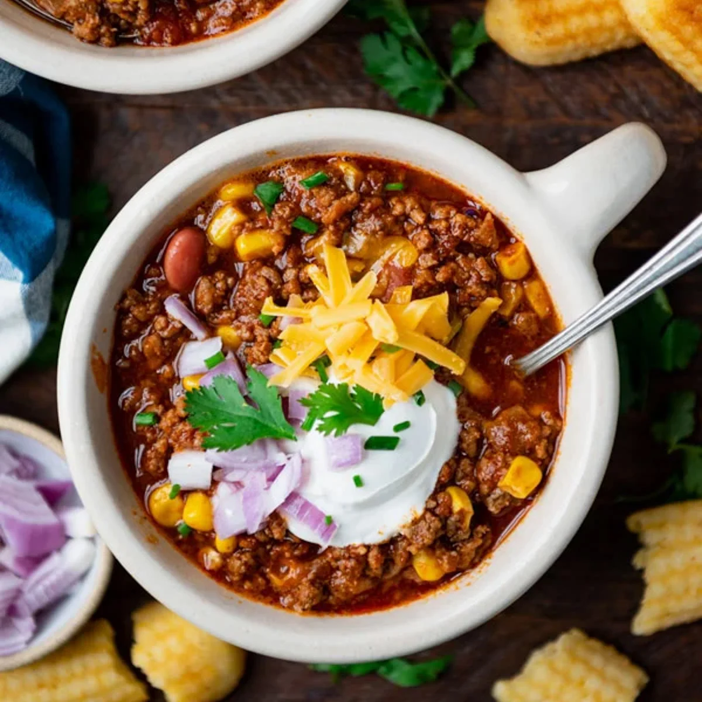

Chili

Colin's Locally Famous Chili
Get ready to have your taste buds dancing with joy! I have an incredible
chili recipe that will leave you craving for more. Picture this: a rich
and hearty blend of flavors that will warm your soul and ignite your senses.
Ingredient list:
- 1 lb Ground Beef or Impossible Meat
- 1 Yellow Onion
- 1 Red Onion
- 8 oz Crushed Tomatoes
- 14 oz Diced Tomatoes
- 1 Can Black Beans
- 1 Can Pinto Beans
- 1 Bottle of Yeungling Beer or Lager
- 1 tbs Worcestershire
- Salt, Pepper, Chili Pepper, Cayenne, Paprika, Garlic Powder, Onion Powder
Step by Step Guide
- Cook ground beef or impossible meat until brown
- Chop onions and add into ground beef with spice mixture
- Cook until onions are translucent
- Add in tomatoes, beans, Worcestershire, and beer
- Bring to a boil
- Reduce heat to simmer when chili reaches boil
- Cook 45 minutes to an hour
- Top with sour cream and cheese and serve